Nordic chain analysis
Nordic ← Logitech / GN ← Ingram / TD Synnex / Amazon. Every section runs in the same order: reasoning → formula → data used → data support → assumption / limit → future work → figures, and names the file behind each number. Numbers are those of the 28 September 2026 run (Nordic's record extended to 2019Q1, F32); the headline numbers are checked against the outputs by tests/test_analysis_page.py. Evidence grades: Aaudited Bcompany-reported, unaudited Cverbal or proxy (quote-checked) Destimate or undisclosed.
Lag structureFrom an Amazon order cut to Nordic's revenue: about 24 weeks
BriefHow many weeks or quarters separate a change in Amazon sell-out from a change in Nordic's revenue, and why.
Reasoned edge by edge before any data: how long goods sit at each edge (capped by inventory cover), plus how long each tier takes to see a demand change and re-plan. The data test the reasoning; they do not pick the lag.
Edge 1 start · retail / distribution
Logitech
Edge 2 · ODM
Nordic's distributors
Nordic
Each box: inventory cover in weeks (the cap on how long goods sit) · the delay of the planning step. The two edges add up to the Amazon route's lag; weighting every route by its 10-K share gives the supply graph's lag kernel.
Conclusion: the order signal takes about 24 weeks (90% 21–27, about 1.8 quarters); the goods alone about 17.
In the forecast: component lead times are 12–16 weeks, so the demand behind Nordic's Q3 was ordered before the 6 August guide and is already in it. The chain therefore gets weight 0 in the guided quarter; the graph drives the quarter after (Q4, the GRi model: Logitech's sell-in through the Nordic → ODM → Logitech segment, F26).
Little's law: time goods sit = stock ÷ flow
Planning delay (per planning step)
| Planning step | R (weeks) | α | Delay (weeks) |
|---|---|---|---|
| Weekly replenishment | 1 | 0.5 | 1.5 |
| Logitech monthly S&OP | 4.33 | 0.8 | 3.2 |
| ODM MRP | 2 | 1 | 1.0 |
| Nordic distributor reorder | 4.33 | 1 | 2.2 |
Routes weighted into the lag kernel
Uncertainty (Monte Carlo, 300 draws)
| Data | Value | Source | Grade |
|---|---|---|---|
| Inventory and COGS by tier | Amazon 36 days = 5.2 weeks; Ingram 5.8 weeks; TD Synnex 9.9 weeks; Logitech 9.5 weeks; Arrow / Avnet 8.7 weeks | SEC XBRL | A |
| Logitech 10-K customer shares FY22–26 | Amazon ~18%, Ingram + TD Synnex ~26% (each effective from its filing date) | 10-K | A |
| Build and planning times | ODM build 6–9.5 weeks, component kitting 4–10 weeks, four planning steps (see formula) | industry practice | D |
| Authorized-distributor lead time | 16 weeks | findchips live snapshot | D |
| For the tests: Logitech radio-category revenue, Nordic Consumer revenue | quarterly series | quarterly reports | B |
| End-demand proxy | Logitech sell-in + the sell-through gap disclosed on calls (no free Amazon sell-out data) | earnings calls | C |
| Check | Result | File |
|---|---|---|
| Prior written before any regression | inventory cover summed across tiers 22.4 weeks (14.4–35.5); step 4's tier-by-tier reasoning 22 weeks | prior_cover_weeks.csv |
| Monte Carlo | mean goods lag 16.6–21.0 weeks (90%); kernel 54% at 1 quarter, 46% at 2, mean 1.46 quarters; signal basis across all routes ≈26 weeks | graph_mean_lag_mc.csv · graph_kernel.csv · graph_signal_lag_mc.csv |
| Inventory cap | all 19 edges with an inventory anchor sit within their cover × 1.10 | graph_lag_checks.csv |
| Data test: correlation of Logitech's radio category leading Nordic Consumer |
1 quarter 0.78
2 quarters 0.90
3 quarters 0.84
4 quarters 0.59
a plateau, not a spike: the data say "1–3 quarters" and cannot pick one lag | xcorr_all.csv |
| Continuous lag | the near-optimal range, 19.5–37 weeks (13 quarters, one cycle), contains 24 weeks: the data do not reject the reasoning | graph_vs_step4_continuous_lag.csv |
| Back-test: guided quarter (h=1) | lag models err 3.9–5.9× more than guide + mean beat | walkforward_metrics_h1.csv |
| Back-test: the quarter after the guide (h=2) | graph model GRi errs 25.4m, 0.54× the guide extrapolation (47.2m), n 9 | walkforward_metrics_h2.csv |
| Assumption / limit | Consequence and handling |
|---|---|
| Planning delays are not disclosed (D) and may partly sit inside inventory cover (P100) | on the Amazon route the signal lag is 19–24 weeks if part of the planning delay already sits in inventory cover; the forecast uses the sturdier goods basis |
| Retail and distributor inventories cover all categories | cover is only a cap, never the lag itself |
| End demand is proxied by Logitech's sell-through, not Amazon's actual sales | the correlation plateau is mostly the common industry cycle (Nordic lags chip shipments and US electronics retail by as much); one cycle and a ~16% share cannot narrow the lag |
| The lag moves with the cycle | ~4 quarters in the 2021–22 shortage (Nordic's backlog reached 9.9× quarterly revenue), ~2 in the 2023–24 destock; each rests on a single turning point |
| What | What it solves |
|---|---|
| Amazon's actual sales (Keepa, POS data; paid) | tests edge 1 directly |
| A lead-time history | updates edge 2's cap quarter by quarter |
| More cycles | peers' data for 2008–10 and 2011–19 exist; Nordic's own chain data do not |
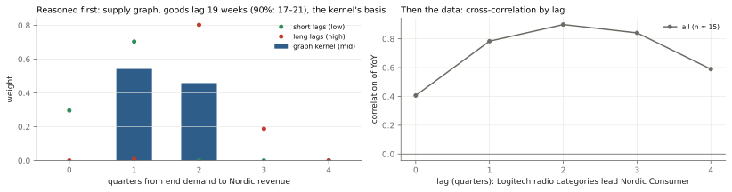
MechanismChannel inventory drives revenue, not the company's own balance sheet
BriefWhere inventory actually sits at each tier, who bears it, and how each company discloses (or hides) it. Distinguish a company's own balance-sheet inventory from the inventory its channel holds.
Revenue is sell-in (sold into the channel), not end demand (sell-through); the difference is the change in channel inventory. So it is channel inventory that moves revenue, not a company's own stock.
| Own inventory (balance sheet) | Channel inventory (at distributors and retailers) | |
|---|---|---|
| Disclosure | every tier discloses it (XBRL / reports) | almost nobody gives a number; only Microchip reports distributor days |
| How it is read | directly | indirectly: Logitech's by recursion from its sell-through − sell-in gap; the industry's from Microchip's distributor days |
Signal
Channel state
"Lean", split
In the forecast
| Two kinds of lean | Shortage | Caution (after a destock) |
|---|---|---|
| Backlog | orders placed but not delivered pile up | few orders; the backlog falls |
| Lead time | lengthens | short |
| Price | rises; Nordic's GM reached 60% | — |
| What sets revenue | supply: Nordic knows how many wafers it will get, so its guide is accurate (+2.4% beat on average, n 8) | demand: rush orders still arrive inside the quarter, so it beats by more (+5.2% on average over the 15 quarters since 2019 that were neither building nor short; +3.1% without the two 2020 quarters whose guide was raised before the print, P130) |
Own inventory was tried as a second signal; at the industry level it cannot separate the two, so it is only supporting evidence.
In the forecast: one term only, last quarter's state adjusting the expected guide error (F16, F20, F30). No restocking amount is added: management had seen the refill orders when it guided.
Cover and inventory days
Channel stock added (Logitech, recursive)
Amplification
Channel-state rules
| State | Rule |
|---|---|
| building | distributor days up ≥ 3 days over two quarters |
| drawdown | down ≥ 3 days over two quarters from above normal |
| lean | level z ≤ −1, or still falling from normal or low |
| shortage (Nordic) | lean and (backlog > 2 quarters of revenue or live lead time > 26 weeks) |
In the forecast
| Data | Coverage | Source | Grade |
|---|---|---|---|
| Inventory and COGS by tier | Amazon, Best Buy, CDW, Ingram, TD Synnex, Arrow, Avnet, Logitech | SEC XBRL | A |
| Nordic inventory and COGS | quarterly | quarterly reports | B |
| Logitech sell-through − sell-in gap | 21 quarters | call transcripts, quote-checked | C |
| Microchip distributor days | 2007–2026 | 10-Q / 10-K | A |
| Nordic backlog | 2020Q4–2023Q1 (not disclosed after) | quarterly reports | B |
| Authorized-distributor lead time | live snapshot | findchips | D |
| 12 peers' guides and actuals | 2008–2026 | Pipeline D | A B |
| Check | Result | File |
|---|---|---|
| Management confirms it | Logitech's CFO on the FY24 Q4 call: two points of the extra sell-in growth "is simply comparing the channel inventory year-over-year", i.e. this year's destock was smaller than last year's | pipelines/A_company_financials/data/manual/logitech_2024Q1.txt |
| The recursion reproduces that quarter | 2024Q1 from the gap alone = +48.0m (looks like stocking up); recursion = −61.5 × 1.0035 + 48.0 = −13.7m (still destocking) | channel_index_logitech.csv |
| The amplification sits at the component tier (2021–26) | Logitech shipments / end demand ×0.99; purchases / shipments ×1.24; Nordic Consumer / Logitech shipments ×2.72 | bullwhip_links.csv |
| The 2023 fall was a channel event | Nordic's top-10 customers −3%, the distribution-heavy broad market −46% | Nordic annual reports · nordic_top10_vs_broad.csv |
| The state predicts guide errors | 12 peers, 619 firm-quarters: after a building quarter the guide error is −1.64 pts (t −4.4, firm fixed effects, clustered by quarter) | guide_error_state_effect.csv |
| The two kinds of lean are distinguishable | Shortage (2021Q1–22Q3): backlog 5.4–9.9 quarters of revenue, Nordic's own inventory 57–94 days, GM up to 60%. After the destock (2025Q3–26Q2): lead time 16 weeks (one live snapshot, 2026Q2), own inventory 141–193 days, GM 52–53% | |
| Nordic's own channel (D25, P128) | Microchip's days are a stock; Nordic's wording is a flow. Cumulated into a level, Nordic's wording and Microchip's days correlate negatively at every shift from −3 to +4 quarters (−0.17 to −0.86), so Microchip is used only as a state signal (its turns agree within a quarter: Nordic destocking from 2022Q3, Microchip building from 2022Q4). Size: with the top-10 customers (served direct) as the sell-through proxy, broad-market growth minus top-10 growth = −14.4, −42.7, −3.7 pts (2022–24), about −44m, −164m, −8m: ≈215m drained, ≈29 weeks of 2022 broad-market sales. Arrow / Avnet's all-vendor cover only rose from 7.0 / 9.0 to 9.9 / 14.5 weeks over the same years, so most of the excess sat with small customers | nordic_channel_size.csv · nordic_wording_vs_microchip_shifts.csv |
| Today | Logitech's channel is 1.1–2.1 weeks below target (latest anchor / all anchors; −194m on all anchors), lean; distributor state lean (2026Q2) |
| Assumption / limit | Consequence and handling |
|---|---|
| The channel level is unobservable | Logitech's channel weeks are anchored on "at target" statements, ±0.7 weeks; GN has a gap but no anchor, so direction only; ODM kitting is not disclosed at all (D assumption 2–8 weeks) |
| Retail and distributor inventories cover all categories | peripherals are a small part, so cover is only a cap |
| State thresholds were set after seeing 2020–26 (disclosed, D22) | and a building channel is flagged a quarter late |
| The shortage split was decided after seeing the data (F30) | Nordic uses the 15 quarters that were neither building nor short (+5.23%) instead of 23 (+4.26%); point 238.0 → 240.2; the walk-forward is no better (5.54 vs 5.24 pts); the rule before it is pre-registered and scored on 22 Oct |
| One shortage and one destock | every state effect rests on one cycle |
| What | What it solves |
|---|---|
| Score F30, the rule before it, the F16 pooled model and the own-words rule (F31) after 22 Oct | keep or drop the shortage split |
| A lead-time history (free data are live snapshots only) | identifies shortages quarter by quarter now that the backlog is no longer disclosed |
| Distributors' inventory by vendor (Arrow / Avnet do not disclose Nordic's share); an anchor for GN's channel | the channel level, not only its direction |
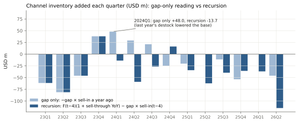
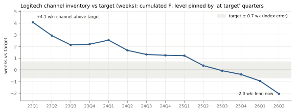
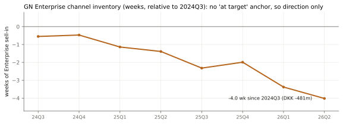
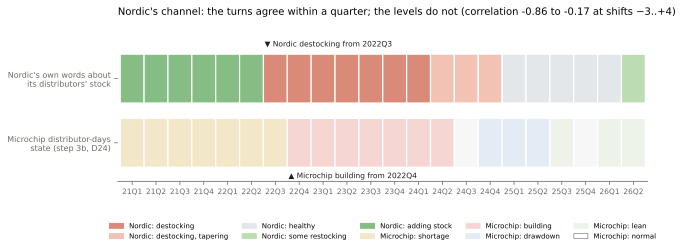
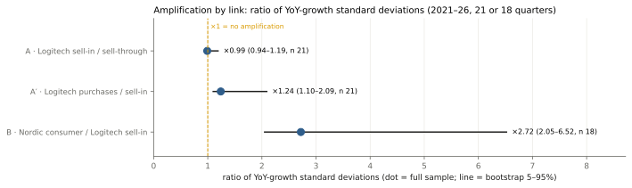
AttributionLogitech + GN ≈ 16% of Nordic's revenue (13–20%)
BriefNordic sells into many end markets beyond these two customers. How much of Nordic's consumer revenue plausibly runs through Logitech and GN, and how did you estimate it?
Nordic does not disclose revenue by customer, so five independent legs bracket it (A–E), giving a range and a path over time rather than a single number.
Five legs
Invoicing route
Share
In the forecast
Conclusion: ≈27% of Nordic Consumer (22–34%, 80%) and 16% of total revenue (13–20%) (the quarterly path shows 17% for 2026Q2 because it uses the 2024–26 FCC cohort, a socket share of 81% against 77% for all grants), if Logitech buys through ODMs; ≈11% if Nordic invoices it directly. GN is ≈8m a year (6–10m), ≈1%.
In the forecast: the share s sets how much of Nordic the chain speaks for (s = 16.8% in the chain term). The chain gets weight 0 in the guided quarter, so the point does not move whichever end of the range is right.
Leg A, bottom-up
Leg B, ceiling (if invoiced directly)
Share path
| Data | Value | Source | Grade |
|---|---|---|---|
| Logitech peripheral-category sales | last four quarters 3,286m | 10-K / 10-Q | B |
| FCC internal-photo census | 101 Logitech grants (81 with public photos), 38 read, 33 legible; 30 peripherals: Nordic 23, Telink 5, other 2 → socket share 77% (62–87%) | fcc_logitech_grants_2023_2026.csv | B |
| Nordic IFRS 8 major-customer disclosure | only two customers above 10%, both distributors (30%, 12%) | annual report | A |
| Nordic last-four-quarters revenue | 759.5m | quarterly reports | B |
| Nordic proprietary 2.4 GHz revenue | technology split, not disclosed from 2025 | quarterly reports | B |
| Nordic top-10 customers vs broad market | annual | annual reports | B |
| Leg / check | Evidence | Result |
|---|---|---|
| A bottom-up | Nordic content ≈3.6% of Logitech's sales | Logitech ≈115m (median); implies ≈88m Logitech radios a year (75–104m)attribution.json |
| B ceiling | if invoiced directly | Logitech ≤ 76m, share ≈11% |
| C category prior | PC peripherals' weight in Nordic | ≈17.8% (14.5–21.2%) |
| D floor | proprietary 2.4 GHz revenue | peaked at 96.1m in 2022Q2 (13.7% of Nordic), down 66% by 2024Q1 (Logitech moved to BLE / Bolt) |
| E natural experiment | Nordic Consumer −41% (−202.8m, 2022Q3–2024Q1); Logitech's radio categories −14% (2022Q1–2023Q3, their own peak to trough) | if all of it came from Logitech, Nordic content would have to be 51% of Logitech's sales, which is impossible → most of the fall came from other customers |
| Share path | 15% (2022Q1) → 21% (2024Q2, the broad market fell faster than Logitech) → 17% (2026Q2, 13–21%) | attribution_path.csv |
| Back-test | the quarter after the guide: the reasoned chain's slope is 3.2 | Nordic moves ≈3× what the share implies (its other consumer customers ride the same cycle)chain_weight_tests.csv |
| Assumption / limit | Consequence |
|---|---|
| The invoicing route is not disclosed | the gap between 16% and 11% comes from this one assumption |
| FCC census: 38 of 81 public grants read; audio and webcams unread | a wide socket-share range; radios per unit and ASP are range assumptions |
| The share covers only Logitech + GN | it understates Nordic's exposure to this consumer cycle (≈3×) |
| What | What it solves |
|---|---|
| Read the remaining 12 peripheral grants and the audio / webcam grants | narrows the socket share |
| Confirm Logitech's ODM and chip-buying route from US customs records | settles 16% vs 11% |
| A chip census for GN | GN's share |
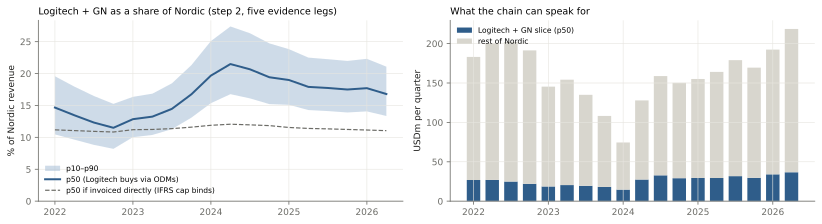
Structural breaksWhich events changed the relationships the model relies on
BriefAnything in the past four years that changes the relationships and how you handled it.
The question is not which events happened but which ones changed the relationships the model uses (lags, amplification, shares, who holds the inventory). So each event gets a before / after test, with its date fixed in the config first (the AI / memory breaks were dated with the data in view), and is put into one of six types:
Events
Before / after tests
Type
Handling
The cycle state is dated by the data (distributor days + supply evidence), not drawn by hand, and enters the forecast through the guide error (F16, F20, F30).
Relationship break
Proxy failure
One-off shock
| Data | Content | Grade |
|---|---|---|
| Chain series | Nordic Consumer; Logitech sell-in and the sell-through gap | B C |
| Event evidence: call quotes (quote-checked) | tariffs, pre-buying, capacity, supplier incident | C |
| Event evidence: Nordic backlog | 2020Q4–2023Q1 | B |
| Event evidence: inventory by tier | XBRL | A |
| Event evidence: WSTS and TD Synnex revenue | the proxy tests | A B |
| Outputs | event_breaks.csv · relationship_breaks.csv · event_study_supplier_incident.csv |
| Event | Type | Before / after evidence | Handling |
|---|---|---|---|
| 2021–22 chip shortage | Relationship break | backlog reached 9.9× quarterly revenue; the chain link breaks once, at the end of the shortage (2022Q4), Chow p 0.04 | excluded from the lag fits; Nordic's guide habit keeps these quarters apart as shortage (D24, F30) |
| 2022Q4–24Q2 build and destock | Relationship break | 2023: top-10 customers −3.2%, broad market −45.9%; after a building quarter the peers' guide error is −1.64 pts (t −4.4), Nordic's −7.4 | the channel state enters the forecast |
| Post-COVID demand normalisation | Input moved | 2023: Nordic Consumer −38%, of which Logitech + GN only −3.2 pts and the rest −34 pts; the chain is the same before and after 2024Q2 (Chow p 0.77, slope +1.66 → +1.07) | demand enters through the driver; no break added |
| 2025 US tariffs | Relationship break (price) | call: "price was a lift of 150 basis points" (GM) → price increases ≈2.8% of sales; Americas shipments −4.9% / −3.6%; only 3 quarters since, so no change can be detected (Chow p 0.78 / 0.91) | the unit basis strips the price step; the effect on the chain term is well under 1m |
| 2025Q1 pre-tariff buying | One-off shock | Logitech inventory 81 days (71 a year earlier), back to 69 in 2025Q2 | lags unchanged |
| AI / memory cycle | Proxy failure (unproven) | WSTS +129% vs Nordic +33%; correlation +0.76 → +0.27 (Fisher z p 0.28), Chow p 0.57; TD Synnex − Logitech growth gap Welch p 0.15; Microchip distributor days (28, 26, 25) unaffected | WSTS and distributor dollars are context only, never in the model; the state signal stays |
| 2026 supplier incident | One-off shock | event study: gross −7.1m on Nordic's Q3, 75% assumed in the guide → net −1.8m; Q4 −0.9m | enters the forecast as an event term |
| Nordic capacity tightness | Forward risk | CEO: "running at its almost maximum pace"; lead time 16 weeks | monitoring W4: lead time > 20 weeks or stock halves |
| GN restructuring (SteelSeries in 2022, Hearing divested in 2026), SYNNEX + Tech Data merger (2021) | Reporting basis | filings | config switches (config structural_breaks) |
| Stable | Stable | Logitech's 10-K customer shares (Amazon 17–19%, Ingram 13–15%, TD Synnex 12–15%); lag-kernel weight at 1 quarter 0.54 | the graph uses them point in time |
| Assumption / limit | Consequence |
|---|---|
| Four years hold one full cycle | most tests have low power (3 quarters since the tariffs) |
| State thresholds set after seeing 2020–26 (D22) | a build-up is flagged a quarter late; the shortage split was decided after seeing the data and the back-test does not support it (5.54 vs 5.24) |
| 75% of the supplier incident assumed in the guide (D judgment) | range 0 to −7.1m |
| What | What it solves |
|---|---|
| More quarters after the tariffs | re-tests the price break |
| Watch capacity (W4) | if lead times lengthen, the shortage state switches on by rule |
| More cycles | peers' data go back to 2008; Nordic's own chain data do not |
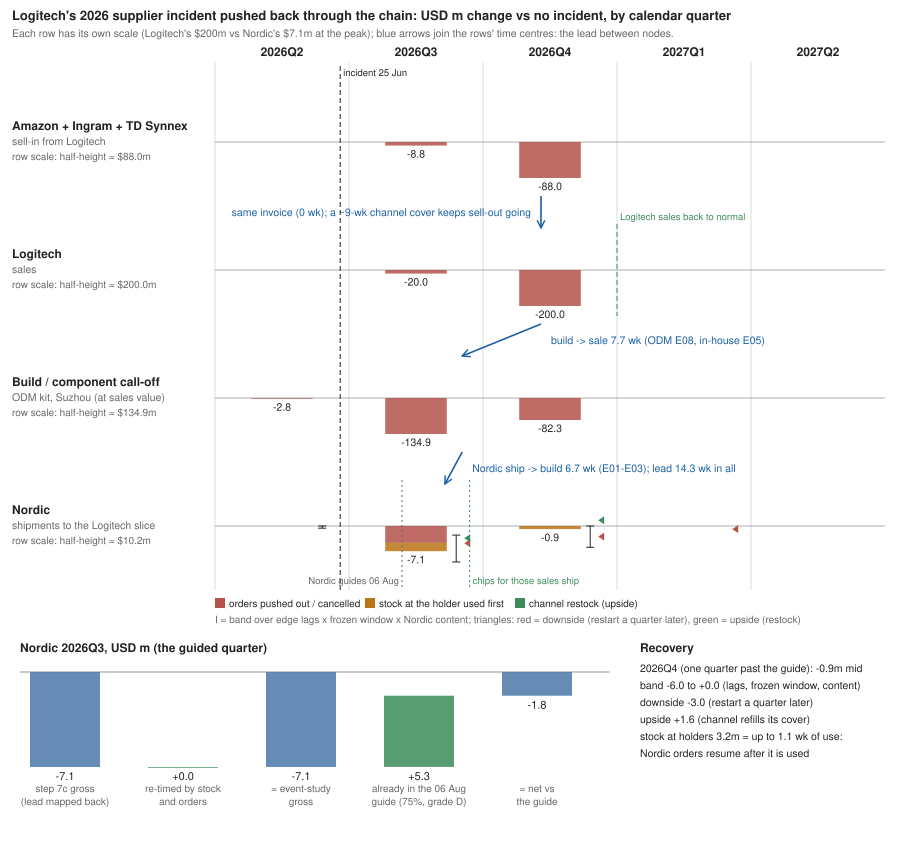
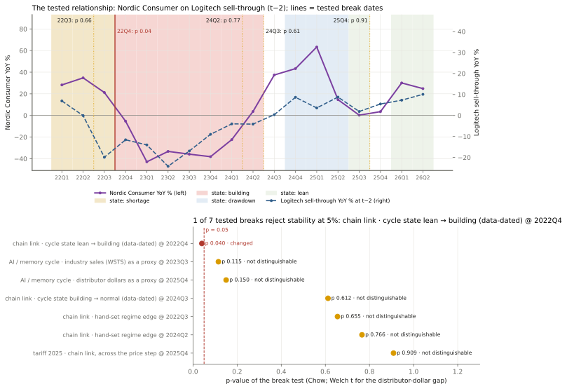
What we chose not to buildBuild only what can be back-tested
BriefWhat you chose not to build. Note where you used an existing library, API or dataset rather than writing your own, and where you deliberately stopped.
The value is in the reasoning and the tests, not in infrastructure: data fetching, statistical tests and charts use existing APIs and libraries. The rule for stopping: going further would not change any forecast number, or would only "work" by chance on one cycle.
None (this section is about trade-offs).
| Used, not written | What |
|---|---|
| Data and APIs | SEC EDGAR XBRL and filings, Oslo Børs NewsWeb, company PDFs (pdfplumber), FRED / Census / WSTS, ECB FX rates, findchips (Digi-Key and Mouser stock and lead times), fccid.io exhibits and the iFixit API |
| Libraries | pandas, numpy, scipy, matplotlib; no database, scheduler or machine-learning framework |
| Not built / stopped | Type | Reason |
|---|---|---|
| Amazon Best Sellers Rank | Skipped | the free archive carries the rank in 2 of 14 monthly captures; Keepa is paid |
| Price and promotion history, Idealo / Geizhals, brand promo pages | Skipped | no history to back-test |
| GN sell-out data | Skipped | paid, and mostly an invisible channel |
| FCC photo census | Stopped at 38 grants | enough to bound the socket share |
| Factor search | Stopped after ~12 | one more would "work" by chance |
| ODM production-lead test | One pass | — |
| Route-level propagation | Tested, dropped | no gain |
| A state-dependent chain amplitude | Not built | one destock to estimate and score it on, and no live number would move |
| Forecasts beyond the quarter after the guide | Not built | no public end demand to feed the graph further out |
| Logitech's post-guide FX term | Computed, not applied | fails its walk-forward test (F27) |
| 12-peer panel | Beyond scope, kept | it showed the beat is management's forecast error (K1) |
Without those sources, end demand can only be proxied by Logitech's sell-through (see Lag).
| What | What it solves |
|---|---|
| Keepa (Amazon rank and price history), POS data | direct end sales |
| Distributors' inventory by vendor | Nordic's channel level |
Full list with reasons: docs/not_built.md
—
Model limitationsIt works where the orders have not yet shown up
BriefModel limitations. Does it work, where and why, and where it doesn't.
Conclusion: it helps where the orders have not yet shown up, and adds almost nothing where they have. For the guided quarter management already sees the chain's information in its orders, so the guide wins; one quarter out, the model timed by the graph's lags beats the guide extrapolation.
The beat is management's forecast error, not demand: across 632 peer quarters revenue YoY has sd 29% but the beat only 3.9% (correlation 0.23); in the 20 quarters where revenue fell 30% or more the mean beat was −0.2% and 95% stayed within ±5%. Management writes the cycle into the guide.
Walk-forward back-test
| Data | Files |
|---|---|
| Nordic and Logitech guides and actuals; 12 peers 2008–2026 (Pipeline D) | walkforward_metrics_h1.csv · walkforward_metrics_h2.csv · guide_error_walkforward_nordic.csv · key_insights.csv · composite_risks.csv |
| Test (out of sample) | Best | Against | Reading |
|---|---|---|---|
| Guided quarter (h=1), Nordic revenue | guide × beat 7.4m | lag models 3.9–5.9× worse; chain weight 0 | the guide holds the order book |
| Nordic guide error (h=1) | pooled with peers 5.06 pts | rule in use 5.54, before the shortage split 5.24, past-4 beat 5.41, guide midpoint 5.55, Nordic's own words as the state (F31) 5.66 | the rule in use is not the best out of sample and, with the record extended to 2019 (F32), no better than the guide midpoint: its base group now holds the two 2020 demand-shock quarters (+10.6%, +19.4% against guides raised before the print, P130), which the channel state cannot see |
| The quarter after the guide (h=2) | GRi 25.4m | 0.54× the guide extrapolation (n 9; post-hoc against GR 28.0m); reasoned chain 39.4m | where the chain earns its place |
| Nowcast of Logitech's unreported quarter | persistence 4.96 pts | proxy composite 5.60 (n 13); TD Synnex alone 4.49 vs 4.22 (n 8) | not adopted |
| Guide-setting factor (relative optimism) | — | 671 peer firm-quarters: t 0.3, out-of-sample R² −0.005 | no factor predicts the misses |
| Channel factor, the quarter after the guide | — | 479 peer firm-quarters: out-of-sample R² +1.6% (t 1.4); 102% of the gain from 2023Q3, 2023Q4, 2025Q4 | useful, but small and only at turns |
| Risk the tests cannot rule out (flags of the composite channel factor, a challenger not in the point) | What |
|---|---|
| R1–R2 | the gain comes from one cycle turn; factors chosen after seeing the data |
| R3–R4 | primary and challenger disagree this quarter; very few independent observations |
| R5–R6 | the mechanism fails external validation on 12 peers; it rests on one cycle turn |
| Weakest links | the channel level (no company discloses weeks on hand in numbers); the invoicing route behind attribution; ~4 independent observations behind any Nordic-only estimate; the channel state flags a build-up a quarter late, with thresholds set after seeing 2020–26 |
| GN | the chain does not help: read-across correlation −0.17 / +0.21 against a 0.5 bar; GN is ≈1% of Nordic |
| Scored after the print | Against | When |
|---|---|---|
| Nordic Q3 | three pre-registered challengers and the channel composite | 22 Oct |
| Logitech Q2 | the supply-side ODM nowcast (1,220m) | ≈27 Oct |
| Nordic Q4 | GRi against GR and the reasoned chain | Feb 2027 |
challenger_prereg_log.csv · logitech_odm_prereg_log.csv · q4_prereg_log.csv
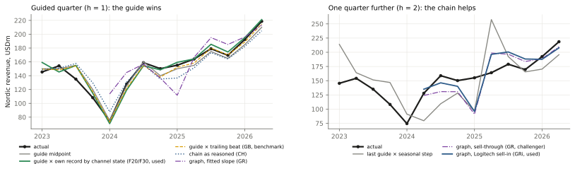
Nordic Semiconductor Q3 2026 · reports 22 OctRevenue 240.2m, gross margin 53.1%
In a guided quarter the guide already holds the orders Nordic can see, so the forecast is how far management will be off this time. No chain or lag model beat the guide in the back-test (see Lag).
Start
How far management will be off
Not in the guide
Point
Conclusion: revenue 240.2m (225.2–255.3, ≈80%), +34.2% YoY; gross margin 53.1% (52.0–54.2%).
Revenue
Range
Expected error e
Supplier incident, net
Gross margin
| Data | Value | Source | Grade |
|---|---|---|---|
| Q3 guide | revenue 220–240m; GM > 50% | Nordic Q2 2026 report (6 Aug) | B |
| Guides and actuals | 30 quarters, 2019Q1–2026Q2 (2019Q1–2021Q1 added 28 Sep from the Oslo Børs reports, F32; the 2017–18 half-year guides are a separate record, P133) | quarterly reports | B |
| Channel state | Microchip distributor days; Nordic backlog 2020Q4–2023Q1; live lead time 16 weeks | 10-Q / 10-K; quarterly reports; findchips | A B D |
| Supplier incident | ≈20m in Q2 FY27, up to 200m in Oct–Dec | Logitech call | C |
| Incident propagation | lead time 14 weeks; Nordic content 3.63% | supply graph (step 5d) | |
| GM and one-offs | 2021–2026; one-offs in 2024Q2 (write-down) and 2025Q4 | quarterly reports | B A |
| Cross-check (14 of 16 inside the range) | Type | Revenue | vs range |
|---|---|---|---|
| Point | main model | 240.2 | 225.2–255.3 |
| Rule before the shortage split | challenger (pre-registered) | 238.0 | inside |
| Habit pooled with the peers (F16) | challenger (pre-registered) | 233.4 | inside |
| Nordic's own words as the state (F31) | challenger (pre-registered) | 237.0 | inside |
| Channel composite | challenger (pre-registered) | 237.8 | inside |
| Composite + graph | challenger (pre-registered) | 237.6 | inside |
| Reasoned chain (CH) | independent method | 224.5 | outside |
| Distributors turn to building | scenario | 220.9 | outside |
| Distributors restock to step 3's high | scenario | 254.8 | inside |
cross_checks.csv · challenger_prereg_log.csv · composite_prereg_log.csv (scored on 22 Oct)
| Gross-margin rule | Walk-forward RMSE (pts) | Result |
|---|---|---|
| Last quarter | 2.36 | adopted |
| Guide + last 4 errors | 2.45 | |
| Guide + all errors | 2.37 | |
| 4-quarter mean | 2.90 | |
| Same quarter last year | 4.15 | |
| Channel-excess term (F25) | 2.35 vs 2.34 | not adopted: peers −0.25 pts, t −1.18 |
The > 50% floor has been met in 70% of quarters (n 30).
| Assumption / limit | Consequence |
|---|---|
| The shortage split was decided after seeing the data (F30) | walk-forward over 14 quarters: 5.54 pts, against 5.24 before the split and 5.06 for the pooled model (best); the habit rests on 15 quarters, 8 of them 2019–2020 (F32) |
| 75% of the incident already in the guide (D judgment) | all of it in the guide: 242.0; none: 234.9 |
| A turn to building | Nordic's own building effect comes from 7 quarters of one cycle; if it happens, revenue 220.9 |
| Record extended to 2019Q1 (F32), rule kept as pre-stated (F33) | two limitations shown as risk flags R7–R8 on the dashboard: the channel state cannot see an end-demand shock (2020Q2–Q3 sit in the habit: +5.23% with them, +3.72% without), and the state split has no walk-forward edge over the guide midpoint (5.54 vs 5.55); no new challenger was added after seeing this |
| The GM range covers GM ex one-offs only | 2 of the last 9 quarters had one-offs, so a reported figure can land outside the range (P117) |
| What | When |
|---|---|
| Demand-side data (the next input to build) | 2020 is the case for it (R7): in Q2 and Q3 2020 end demand surged (home-office peripherals, health devices) while distributor stock read lean or normal; the channel state, a supply-chain stock, could not see it and the two quarters landed in the habit (+10.6%, +19.4%). Only an end-demand signal with public history (sell-out, retail point-of-sale) could separate a demand shock from an ordinary quarter before the print; the free proxies tried (step 5f, not_built.md section 2) have no such history |
| Fill in the actual; score the new and old rules and every challenger; keep or drop the shortage split | after the 22 Oct print |
| Distributor-inventory wording (W2) and lead time (W4) as pre-print signals | before the print |
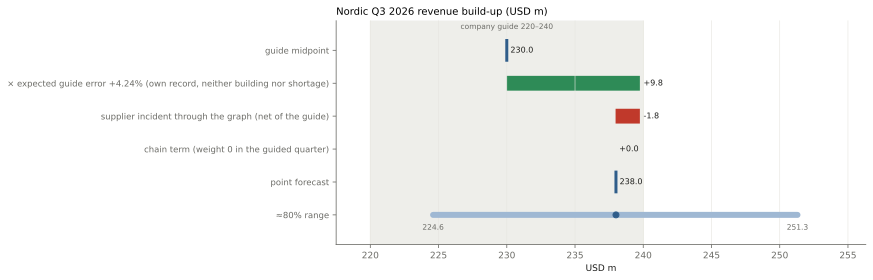
Logitech Q2 FY2027 · September quarter · reports ≈27 OctNet sales 1,226.3m, gross margin 45.3%
As for Nordic, the guided quarter is a forecast of how far management will be off.
Start
How far management will be off
Chain (shown only)
Point
The chain is the tier identity: sell-in = sell-through + change in channel inventory, with channel weeks held flat.
Conclusion: net sales 1,226.3m (1,172.9–1,279.6), +3.4% YoY, just above the 1,220m top of the guide; non-GAAP GM 45.3% (44.1–46.5%).
Net sales
Partial pooling (DerSimonian–Laird estimates of μ, τ²)
Chain (shown only)
Gross margin
| Data | Value | Source | Grade |
|---|---|---|---|
| Q2 FY27 guide | 1,185–1,220m | Q1 FY27 release (28 Jul) | B |
| GM guide | ≈44% | earnings call | C |
| Quarterly guides and actuals | 5 | 8-K | B |
| 12 peers' guides and actuals | 2008–2026 | Pipeline D | A B |
| Sell-through YoY and gap | quarterly | earnings calls | C |
| Channel state | Microchip distributor days | 10-Q / 10-K | A |
| GM guides and actuals | last 4 | calls and 8-K | C B |
| Cross-check (5 of 6 inside the range) | Type | Net sales | vs range |
|---|---|---|---|
| Point | main model | 1,226.3 | 1,172.9–1,279.6 |
| Supply-side ODM nowcast (Merry + Chicony Jul–Aug revenue −13.2% YoY, F28) | challenger (pre-registered) | 1,220.4 | inside |
| Chain at its back-test weight 0.23 | scenario | 1,248.2 | inside +22 |
| Adding the implied guides at the 2023–25 turns, weight 0.48 | scenario | 1,271.2 | inside +45 |
| Tier-identity chain | independent method | 1,315.7 | outside +89 |
| Post-guide FX change (F27) | not applied | +1.4 | the back-test is worse with it: 28.0m vs 23.3m (n 4) |
cross_checks.csv · logitech_odm_prereg_log.csv
| Gross margin | Value |
|---|---|
| Last 4 quarters, actual − guide | +0.6, +2.3, +1.0, +1.3 (all above the guide) |
| Rules by RMSE (pts) | guide + mean error 0.93 (adopted) · 4-quarter mean 1.11 · last quarter 1.29 |
| Assumption / limit | Consequence |
|---|---|
| Only 5 quarterly guides | own weight 11%: the habit is mostly borrowed from the peers |
| Guide errors at turns | at the 2023–25 turns actual sales beat the implied quarterly outlook by up to 11% (logitech_implied_quarter_guides.csv); upside risk from the chain (+89m), downside from the ODM signal (1,220) |
| Supplier incident (≈20m in Q2) assumed to be in the guide | — |
| GM guided only 4 times | the mean past error is noisy |
| What | When |
|---|---|
| Score the ODM challenger (W16); add the quarter to the guide record | after the ≈27 Oct print |
| Update the challenger with the ODMs' September revenue | ≈10 Oct |
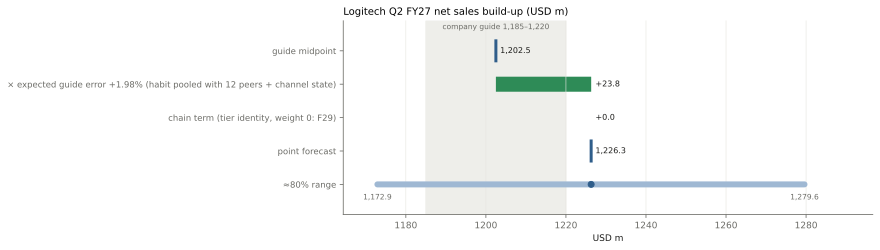
GN Audio Q3 2026 · continuing ops · reports 5 NovRevenue 2,247 DKKm, EBITA margin 13.5%
GN gives only full-year guidance (set in February, revised through the year) with no quarterly guide and no comparable peer group, so the full-year number from the August statement is corrected by its own mean August-guide error (F17, F23); H1 is reported, so H2 is backed out and Q3 taken from it. FX is added separately: the organic guide excludes it, so it is computed from ECB rates and GN's currency mix (F27).
Full-year guide
August error
H2 backed out
Q3 + FX
Revenue
The margin follows the same logic: full-year margin guide + August margin error → full-year EBITA − H1 reported = H2 → Q3 at its share of H2.
Full-year margin
Full-year EBITA
H2
Q3
EBITA margin
Conclusion: revenue 2,247 DKKm (2,023–2,471), +1.6% YoY; adj. EBITA margin 13.5% (9.3–17.8%).
Full-year organic
H2 organic
Q3 revenue
FX
EBITA
| Data | Value | Source | Grade |
|---|---|---|---|
| Full-year guide | organic 0–3%; adj. EBITA margin 9–10% | 19 Aug | B |
| August guides and actuals 2021–25 | see the table below (173 statements quote-checked) | annual / interim reports | B |
| 2025 Q3 continuing-ops revenue | 2,211 (Enterprise 1,624 + Gaming 587) | quarterly report | B |
| H1 2026 | organic −3.92%; EBITA 117 | interim report | B |
| ECB reference rates | 63 days of Q3 so far | ECB | A |
| GN's disclosed FX effects | 5 quarters (to fit the currency exposure) | quarterly reports | B |
| August error (actual − guide) | 2021 | 2022 | 2023 | 2024 | 2025 | Mean |
|---|---|---|---|---|---|---|
| Organic revenue (pts) | −3.0 | −9.5 | 0 | −3.0 | −1.0 | −3.3 |
| EBITA margin (pts) | +0.2 | −3.4 | −0.4 | −0.5 | −0.6 | −0.94 |
| Q3 share of H2 EBITA | 50.7% | 58.0% | 43.5% | — | 44.7% | 2025 used |
| Cross-check (3 of 4 inside the range) | Revenue | vs range |
|---|---|---|
| Point | 2,247 | 2,023–2,471 |
| Division view | 2,348 | inside |
| Guide as given (no error correction) | 2,389 | inside |
| Error pooled with the semiconductor peers (wrong reference class) | 2,476 | outside |
The point is below all three alternatives: a bet that GN's August guide is too high again (4 of 5 years).
| Other checks | Result |
|---|---|
| FX fit | USD exposure 0.43 errs 0.6 pts over 5 quarters (2.3 carrying the last quarter forward); North America check −7.3% vs −7.0% disclosed |
| EBITA bridged from Q2 | 11.6% = Q2 EBITA 111 + incremental revenue contribution 40 + savings 50 + tariff refund 60; 8.9% without the one-off refund (the rule's 13.5% is 10.9% without it) |
| EBITA with Q3's share at its 2021–25 mean, 49.2% | 14.9% |
| Assumption / limit | Consequence |
|---|---|
| August errors cover 5 years only, on changing perimeters | 2022's −9.5 pts dominates the mean; revenue errors are GN Audio in 2021–22 and the group in 2023–25, margin errors Audio in 2021–23 and the group in 2024–25 |
| The margin depends most on assumptions | the rule's 13.5% and the Q2 bridge's 11.6% are 1.9 pts apart: the full-year guide needs H2 profit to be back-loaded; only 2025 is on the continuing-ops basis for Q3's share (43.5–58% across years, sd 6.6 pts) |
| The chain does not help GN | read-across correlation −0.17 / +0.21, below the 0.5 bar; GN is ≈1% of Nordic |
| What | What it solves |
|---|---|
| Score the Q3 point after the 5 Nov print; add FY2026's August-guide error once the full year is reported (Feb 2027) | the August-error rule gets its 6th observation |
| An anchor for GN's channel (it never says "at target"); a chip census for GN | GN's channel level and share |
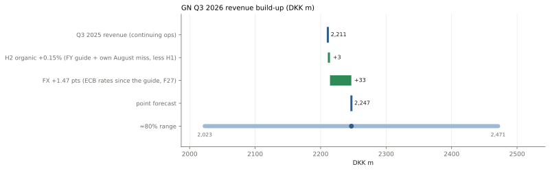